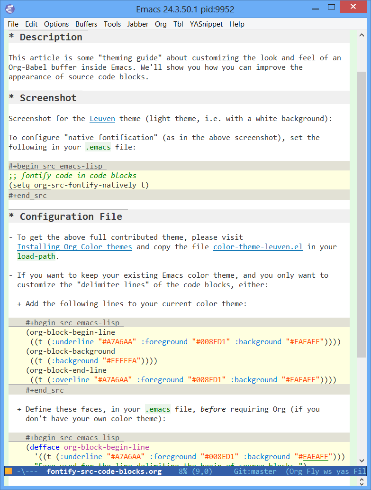

Pretty fontification of source code blocks
Table of Contents
Description
This article is some "theming guide" about customizing the look and feel of an Org-Babel buffer inside Emacs. We'll show you how you can improve the appearance of source code blocks.
Note that coloring the background of code blocks with native fontification no longer works as of commit f8b42e8.
Screenshot
Screenshot for the Leuven theme (light theme, i.e. with a white background):

To configure "native fontification" (as in the above screenshot), set the
following in your .emacs file:
;; fontify code in code blocks (setq org-src-fontify-natively t)
Configuration File
- To get the above full contributed theme, please visit Installing Org Color
themes and copy the file color-theme-leuven.el in your
load-path. - If you want to keep your existing Emacs color theme, and you only want to
customize the "delimiter lines" of the code blocks, either:
Add the following lines to your current color theme:
(org-block-begin-line ((t (:underline "#A7A6AA" :foreground "#008ED1" :background "#EAEAFF")))) (org-block-background ((t (:background "#FFFFEA")))) (org-block-end-line ((t (:overline "#A7A6AA" :foreground "#008ED1" :background "#EAEAFF"))))
Define these faces, in your
.emacsfile, before requiring Org (if you don't have your own color theme):(defface org-block-begin-line '((t (:underline "#A7A6AA" :foreground "#008ED1" :background "#EAEAFF"))) "Face used for the line delimiting the begin of source blocks.") (defface org-block-background '((t (:background "#FFFFEA"))) "Face used for the source block background.") (defface org-block-end-line '((t (:overline "#A7A6AA" :foreground "#008ED1" :background "#EAEAFF"))) "Face used for the line delimiting the end of source blocks.")
Further extensions
When we will have some spare time, our intention is to get the reserved
keywords of Org-Babel (such as :var and :exports) somehow highlighted.
Stay tuned – or give some help!